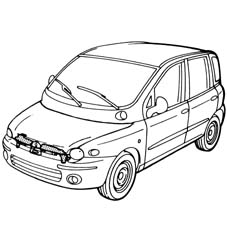
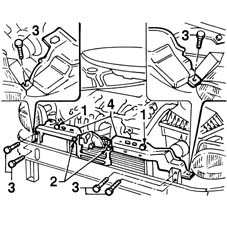
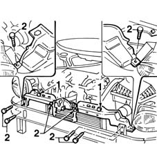
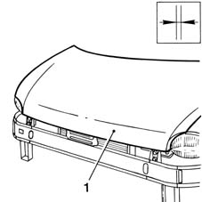
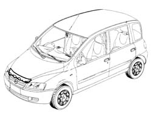
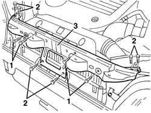
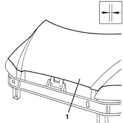
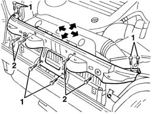

7210A15 R.R. HEADLAMP HOUSING/FRONT WING CROSSMEMBER
- Path
- Procedures > 72 PANELS AND FRAME > 7210 REMOVING REFITTING > 7210A STRUCTURAL ELEMENTS (FRONT PART) > 7210A15 R.R. HEADLAMP HOUSING/FRONT WING CROSSMEMBER
- Kind
- repair procedure (removal / refitting; the operation number is the code)
- Applies to
- all engines; all production periods
- Interactive page
- https://sloeber94.github.io/elrnDB-fMltpl/en/#/2892301
Applies to: all engines; production: fino a 05/99, da 09/03, da 06/99 a 03/02, da 04/02 a 08/03, fino a 05/04
 Removing
Removing
 Refitting
RefittingOpen the bonnet.
Check if any of the connected parts are deformed by checking body alignment dimensions. Use appropriate measurement tools (reference rigs, templates or gauges).

Applies to: all engines; production: fino a 05/99, da 09/03, da 06/99 a 03/02, da 04/02 a 08/03, fino a 05/04
1. Undo the bolts securing the radiator to the top crossmember.
2. Undo the bolts securing the bonnet catch to the top crossmember.
3. Undo the bolts shown in the figure.
4. Remove the two parts of the crossmember.

Applies to: all engines; production: fino a 05/99, da 09/03, da 06/99 a 03/02, da 04/02 a 08/03, fino a 05/04
Refitting
RemovingFit the part correctly on the car.
1. Screw on, without tightening, the bolts securing the radiator to the top crossmember.
2. Screw on, without tightening, the bolts shown in the figure.

Applies to: all engines; production: fino a 05/99, da 09/03, da 06/99 a 03/02, da 04/02 a 08/03, fino a 05/04
1. Close the bonnet.
Check that it is perfectly aligned and that the surrounding gap is even.
Tighten the fixing bolts.

Applies to: all engines; production: fino a 05/99, da 09/03, da 06/99 a 03/02, da 04/02 a 08/03, fino a 05/04
Paint the crossmember in accordance with the specified cycle.
Refit the catch linkage.
Applies to: all engines; production: da 06/04
Removing
Refitting- Place the bonnet in an open position.
- Check that the components connected are not distorted by checking the bodyshell alignment measurements using suitable equipment (gauges, templates or jigs).

Applies to: all engines; production: da 06/04
- Undo the bolts fixing the crossmember to the radiator and the air filter pipe.
- Undo the bolts fixing the crossmember to the bodyshell.
- Remove the crossmember.

Applies to: all engines; production: da 06/04
Refitting
Removing- Position the replacement part correctly on the vehicle.
- Screw in the bolts fixing the crossmember to the bodyshell without tightening them.
- Screw in the bolts fixing the crossmember to the radiator and the air filter pipe without tightening them.

Applies to: all engines; production: da 06/04
- Place the bonnet in a closed position.
- Check/adjust the alignment and surrounding gaps until perfect, then tighten the fixing bolts.

Applies to: all engines; production: da 06/04
- Paint the wing crossmember following the recommended cycle.